32 s · 16:9 · 1920×1080 · 60 fps · 120 BPM · 8 scenes · rendered in code (Canvas 2D + three.js), with a synthesized soundtrack added at final render
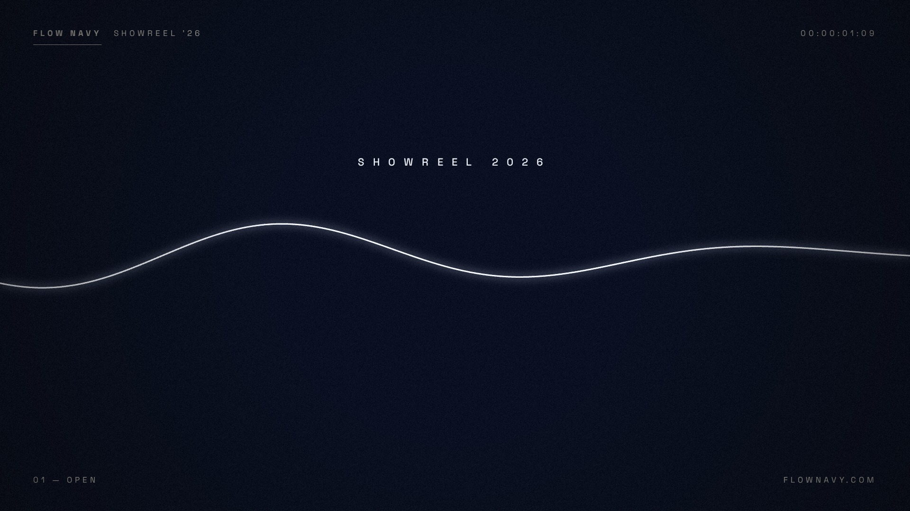
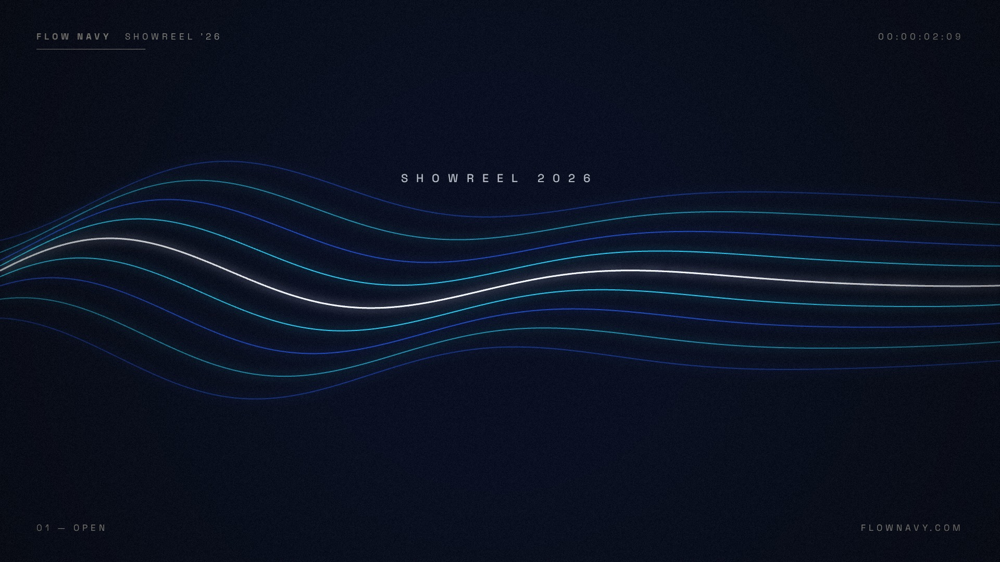
A single line of light draws across the dark, starts to ripple, then splits into nine glowing currents. "SHOWREEL 2026" tracks in. The currents collapse into a white streak.
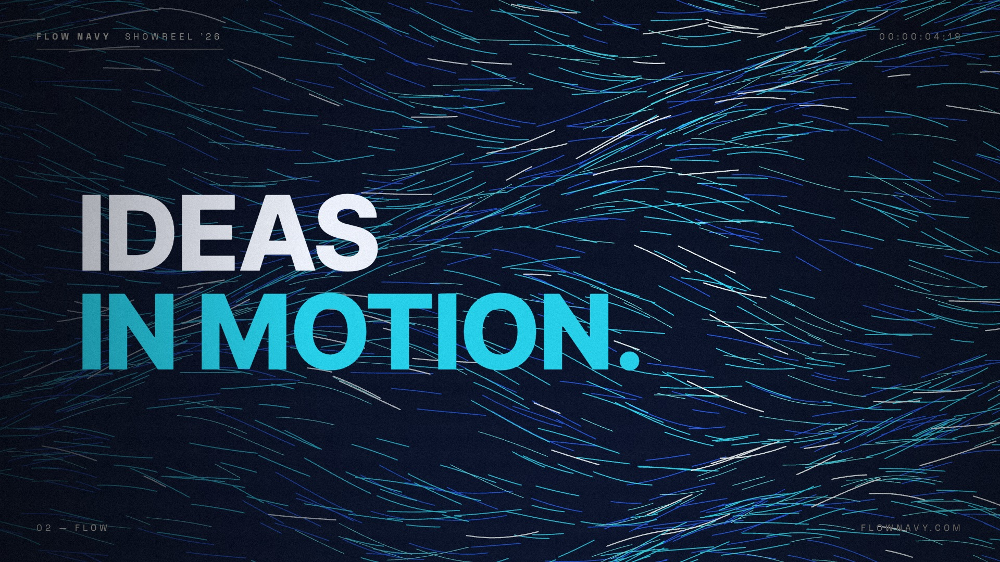
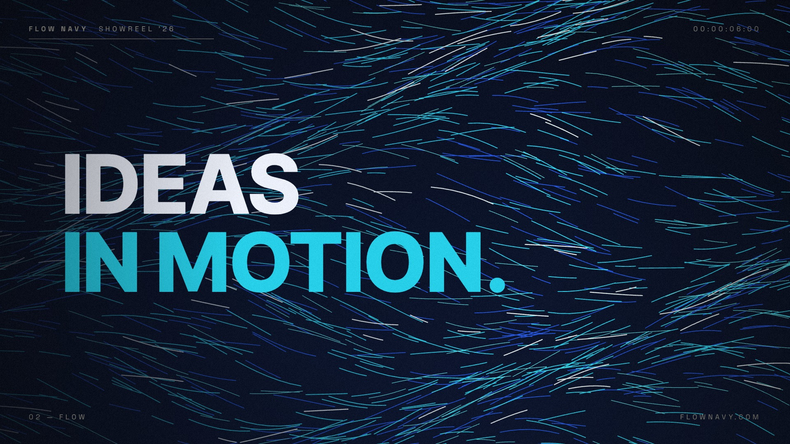
Hard cut to a flow field of 1,700 particles streaming left to right like ocean currents while the camera slowly pushes in. "IDEAS / IN MOTION." rises from a mask, then exits upward.
Four type slams on the beat: MOVE, SHAPE, GUIDE and FLOW. Each hits with a skew, a camera shake and a white flash, over its own background color. Outline echoes scroll behind, and a progress bar fills along the bottom.
Real-time 3D (three.js): a flat plane of 78,000 points swells into a rolling ocean as the camera glides forward and lowers. "CHART / THE COURSE." rises in the lower left.
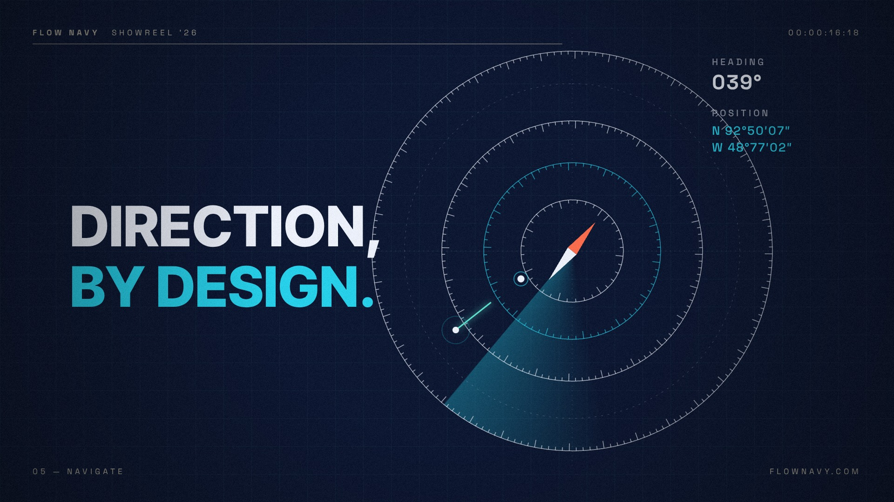
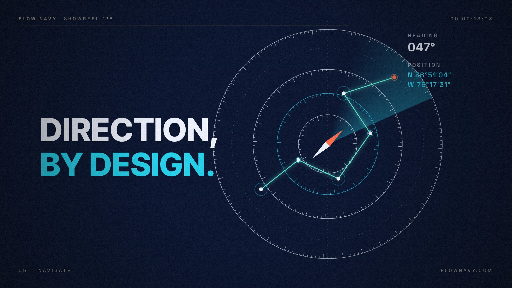
A navigation HUD. Compass rings draw on and counter-rotate, a radar sweep circles, and the needle swings to 047°. A route plots between waypoints to a coral target while the coordinates unscramble. "DIRECTION, / BY DESIGN."
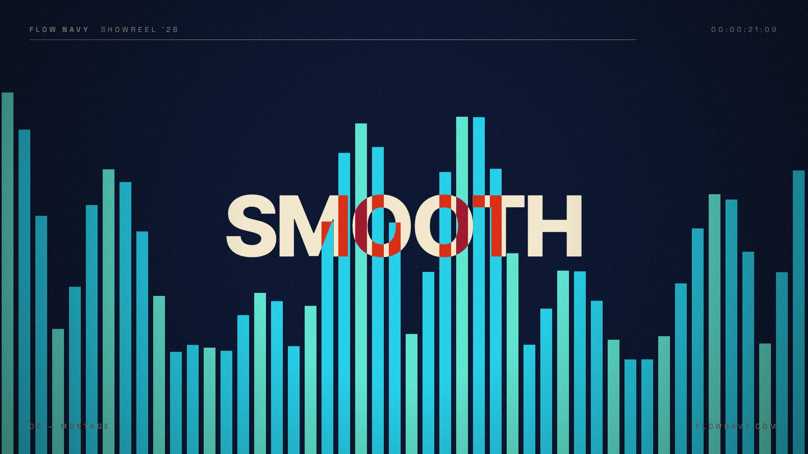
Eight rapid cuts, two per second, on the beat: dot grid, stripes, squares morphing into circles, ripples, EQ bars, halftone, nested triangles and a spiral. Each carries one word in difference-blend: BOLD, CLEAR, FAST, SHARP, SMOOTH, SIMPLE, HONEST, ALIVE.
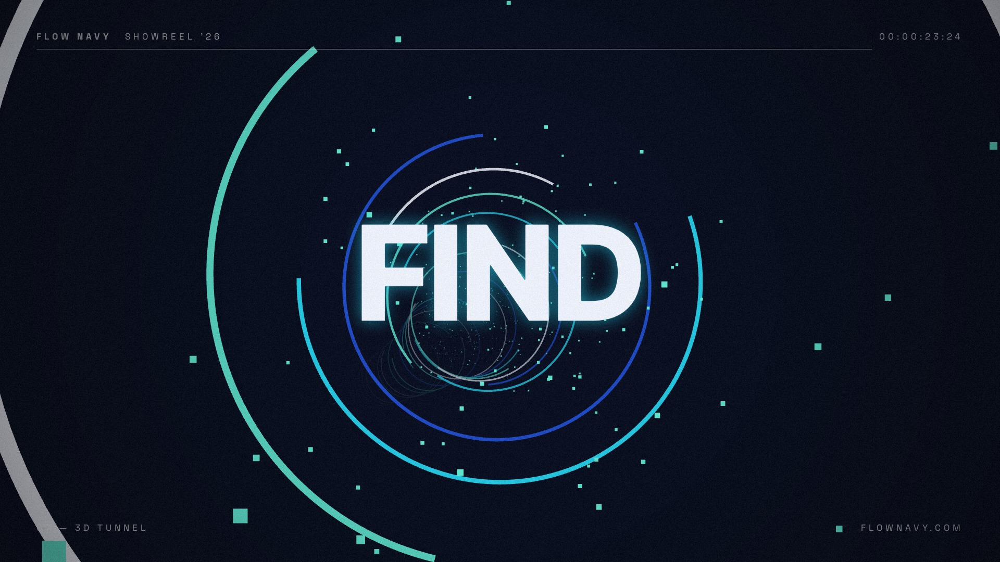
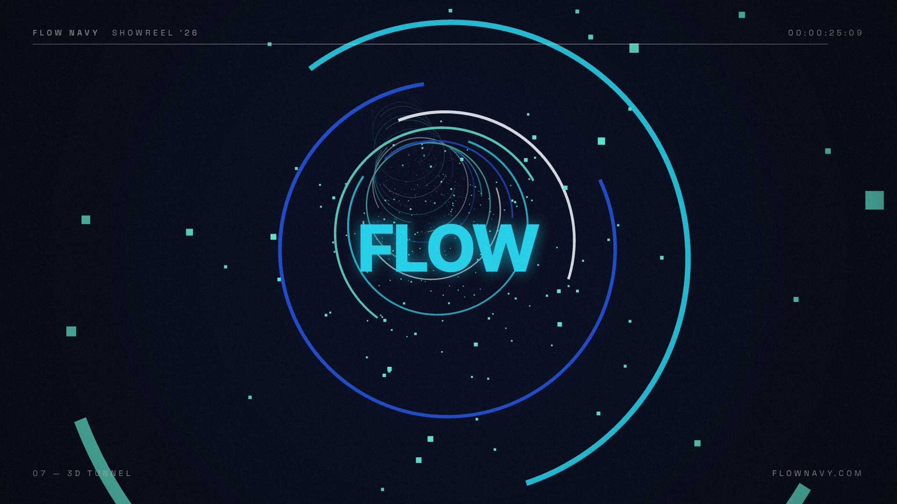
Real-time 3D: the camera accelerates through a tunnel of 150 counter-rotating open rings and 4,000 particles, rolling as it goes. "FIND / YOUR / FLOW" zooms through the lens, and the tunnel whites out.
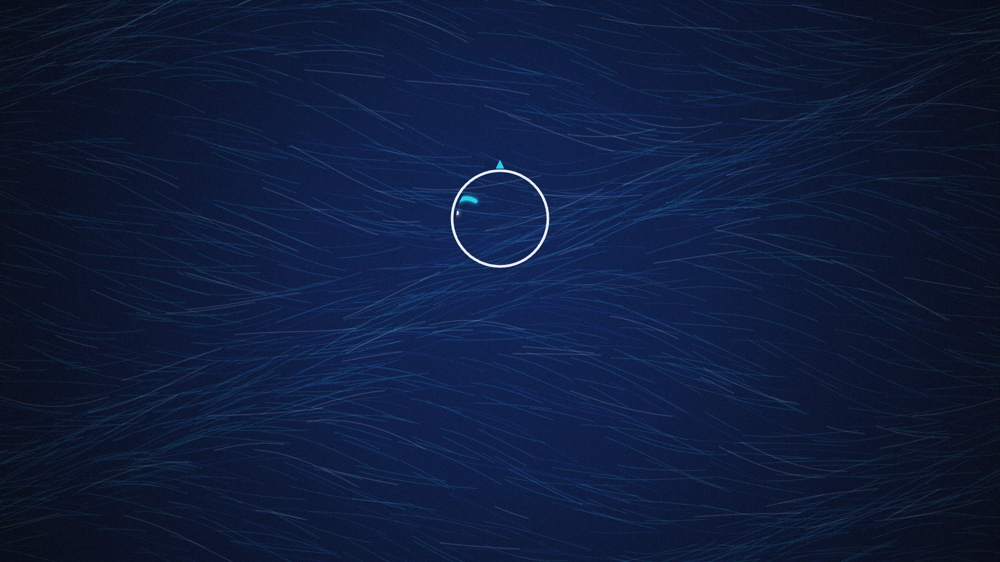
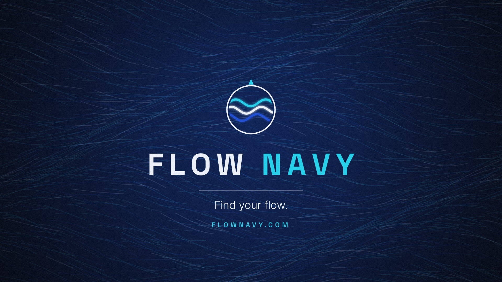
The white screen irises down into the emblem ring (a match cut), and a north notch pops on. Three waves draw inside the ring. "FLOW NAVY" rises letter by letter while the tracking tightens. Then the tagline and FLOWNAVY.COM appear, followed by a hold and a fade out.